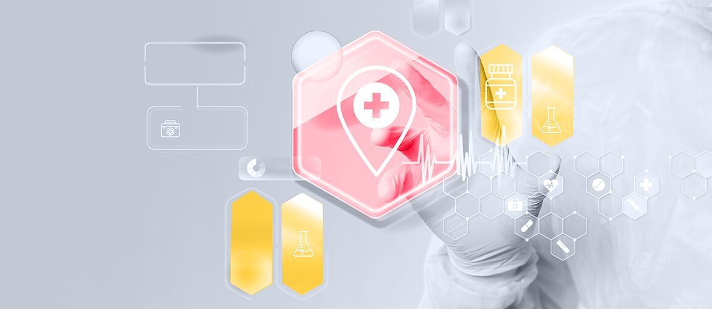

Android reviewers mention itsme loops, no-internet errors, and sync stops. A contract-test suite around auth callbacks and first-run sync would catch these earlier.
Our read
Your Java role says Nexuzhealth is modernizing the KWS core while new features keep moving. That points to a hard middle state: old modules still carry daily care, but teams need cleaner APIs, stronger tests, and safer releases. KWS is described as the digital backbone for Belgian healthcare, used by more than 130,000 care providers. If modernization competes with roadmap work, defects can reach Mynexuzhealth and trust drops. Recent app reviews already show login, sync, and appointment flows feel fragile for some patients.
Where we'd start
iOS reviews mention calendar sync changes and appointment date concerns. Add fixture-based tests for date, timezone, and calendar export flows.
What we'd do
Engagement model
A dedicated pilot squad works under your PO and architects for six weeks, with weekly demos and a clear handover.
Java Tech Lead
2 Senior Java Engineers
QA Automation
DevOps
Pick the pilot area
Map the risky KWS module, its integrations, and patient-facing flows that need stronger release protection.
Modernize one path
Add API-first boundaries around one selected module, using Spring Boot patterns that fit the current Tomcat path.
Raise test confidence
Build TDD and integration tests for auth, sync, appointment dates, SQL edge cases, and Kafka events.
Hand over cleanly
Run weekly demos, document tradeoffs, and leave reusable patterns your internal Java teams can extend.
Who is Elinext
Elinext is a full-cycle software development company, active since 1997, with about 700 in-house specialists and no freelancers. For Nexuzhealth, the relevant part is healthcare-grade engineering: Java, cloud, DevOps, QA automation, and secure delivery under your product owner. Elinext holds ISO 9001 and ISO 27001, which fits work around patient data and regulated systems. Our named customers include Siemens, Broadcom, Volkswagen, TRUMPF, and TUI. We would use that depth to help your architects modernize KWS safely, while your internal team keeps ownership of product choices.
Siemens
Broadcom
Volkswagen
TRUMPF
TUI
Proof
Patient Portal for a Healthcare Company
Elinext built a secure portal for hospital staff and patients, with desktop and mobile access to medical exams.
Read case study
Healthcare Data Privacy QA
Elinext supported automation QA for complex healthcare data flows, with Java, Python, Angular, AWS, and MongoDB.
Read case study